La Sacra Famiglia
del riferimento forma.maker
Render della mesh pubblica del candidato individuato: Maria, Giuseppe, Bambino e bastone. Albero e vassoio esclusi.
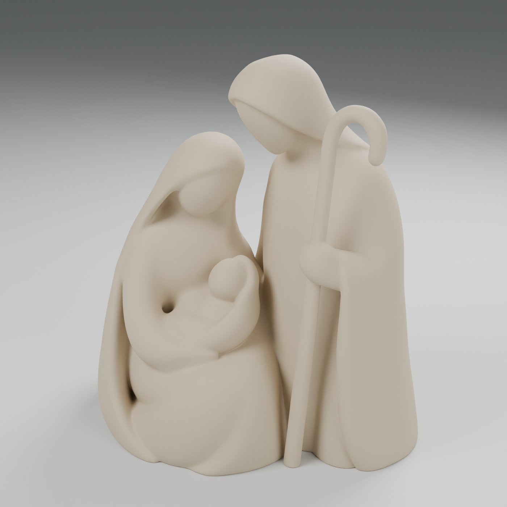
Confronto con la foto
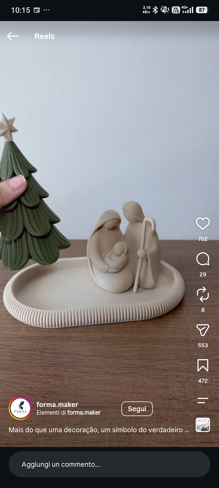
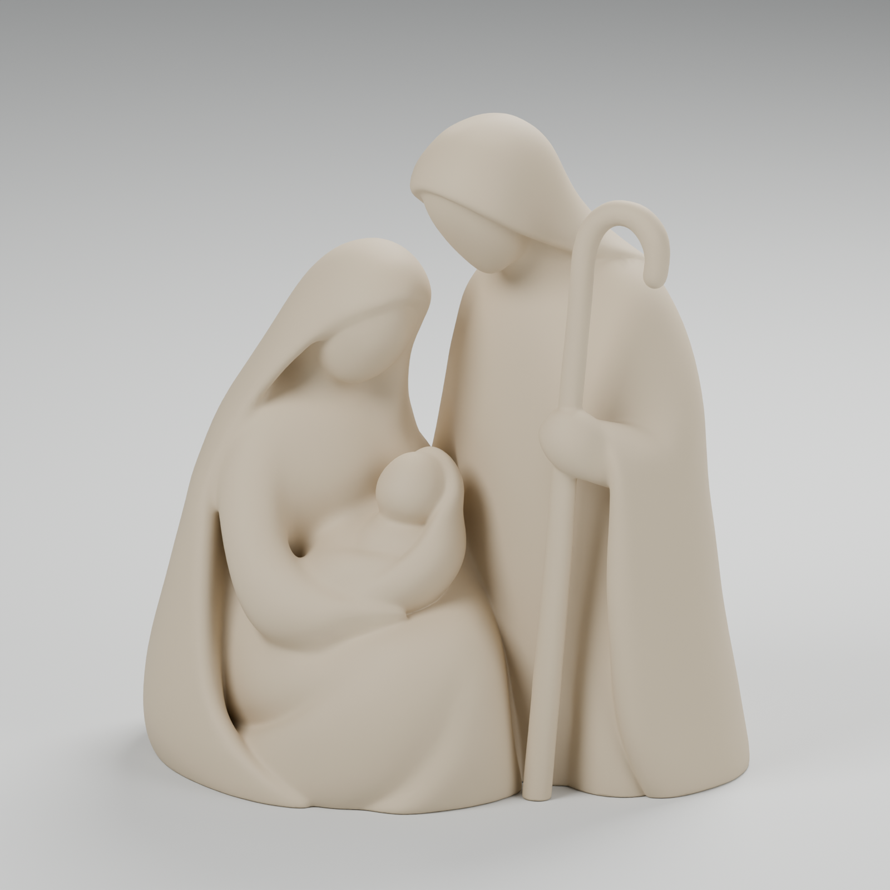
Le viste della geometria

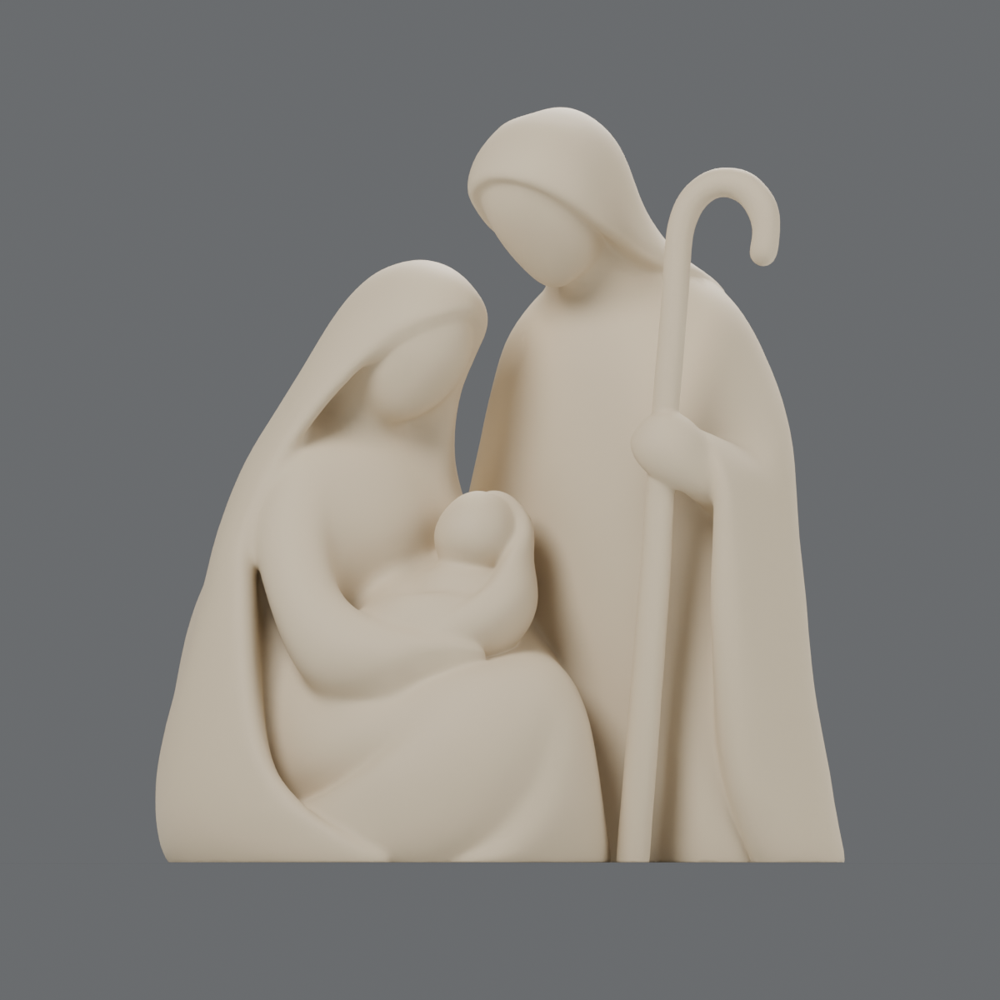

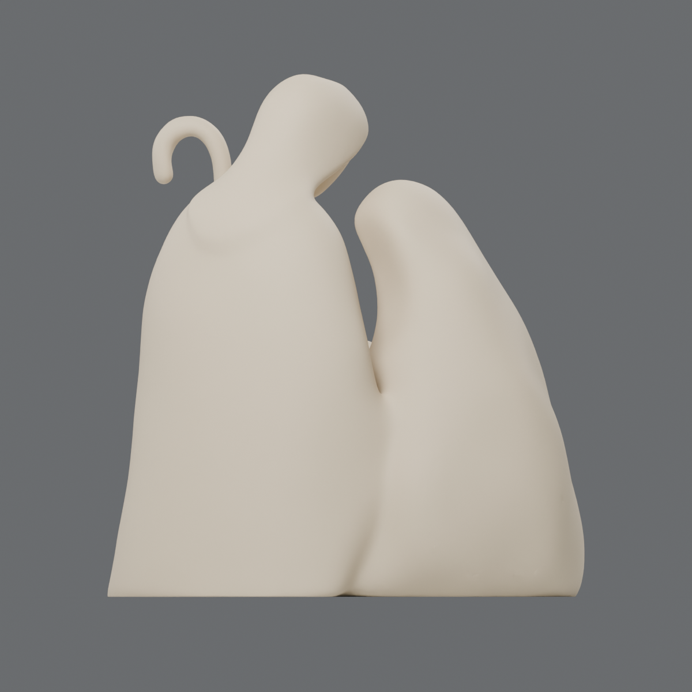

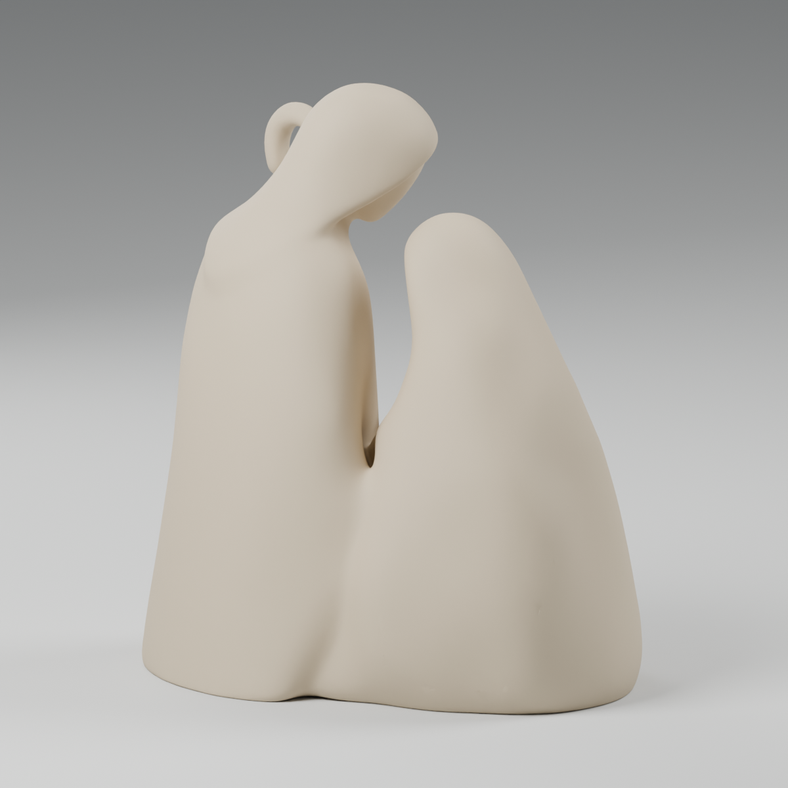

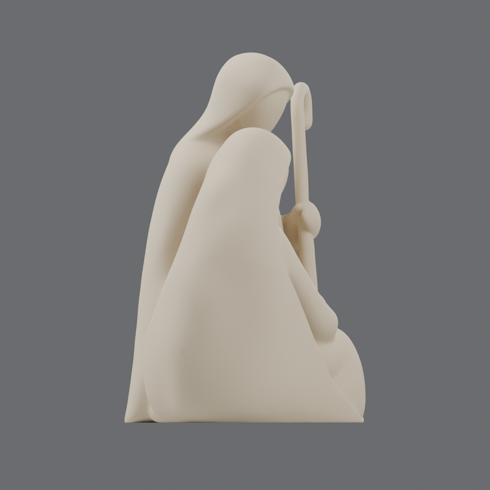

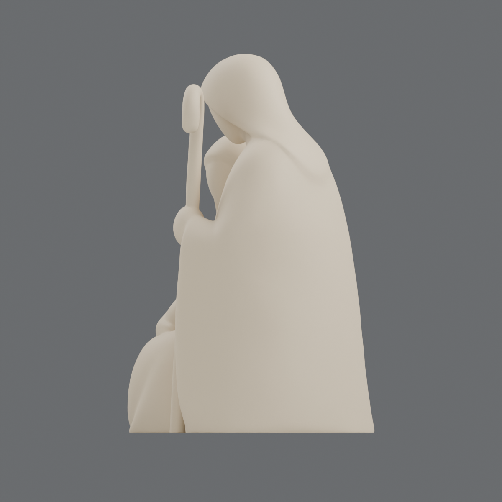

Non è stata trovata una foto posteriore reale verificabile dell’esemplare nel video. Le viste del retro qui sopra sono render della mesh pubblica del candidato. La risorsa è un’anteprima: il progetto non è ancora un file definitivo di stampa e la corrispondenza esatta con il file del video resta da confermare.
Foto di stampa trovate
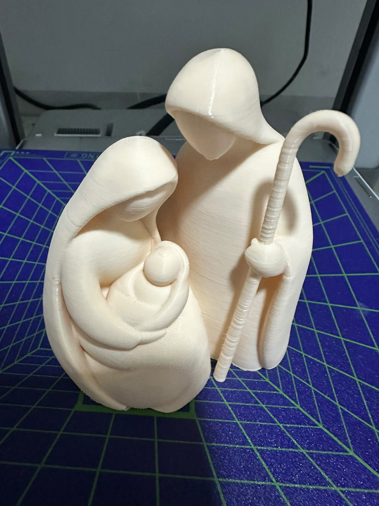
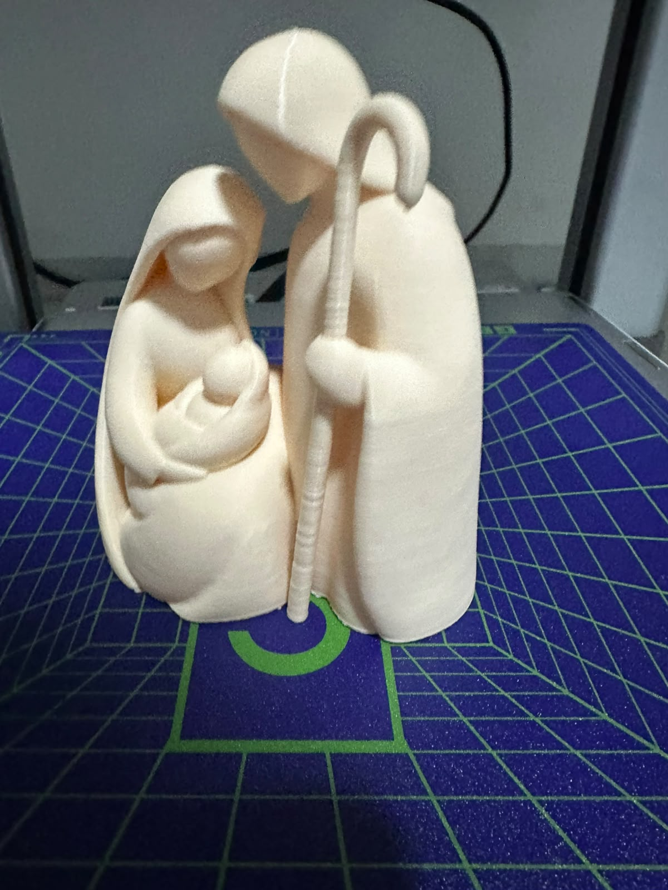
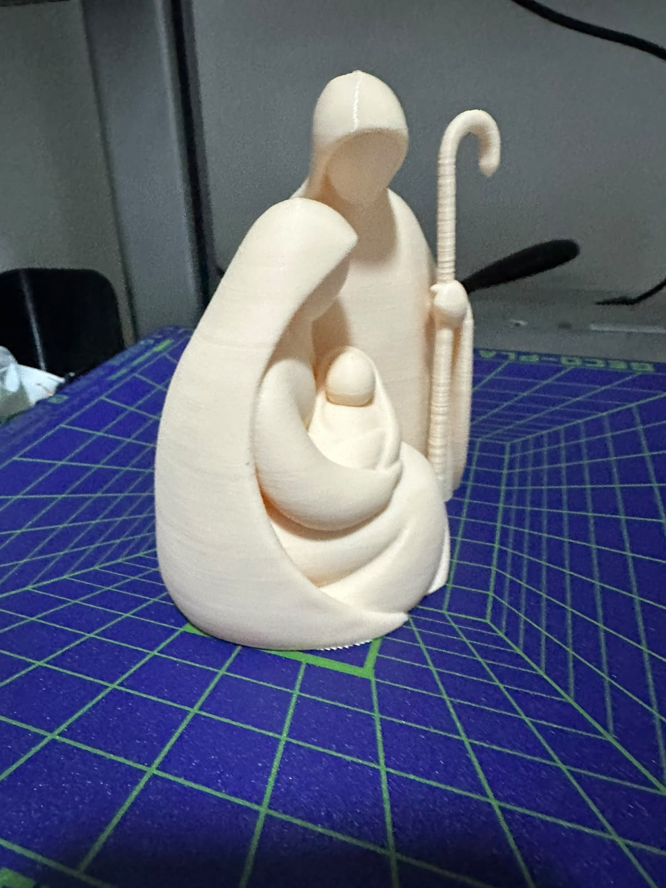
Le foto appartengono alla galleria del profilo MakerWorld 4028964 e ritraggono un esemplare diverso da quello del video. Le immagini promozionali con nomi contenenti “ChatGPT” sono state conservate nella ricerca, ma escluse dalle prove fotografiche.
Progetto e verifiche
La risorsa recuperata misura circa 99,9 × 71,3 × 109,5 mm. Sono dimensioni della mesh, non misure dedotte dallo screenshot. L’audit rileva 46.934 triangoli, senza bordi aperti o non manifold; la forma non è stata riscolpita.